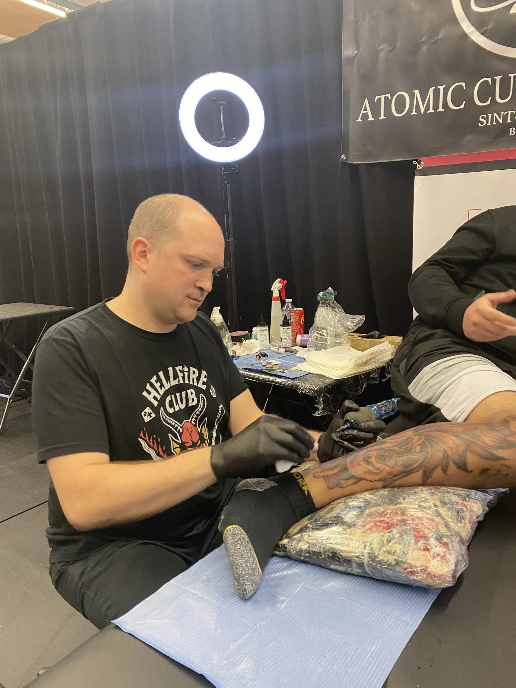
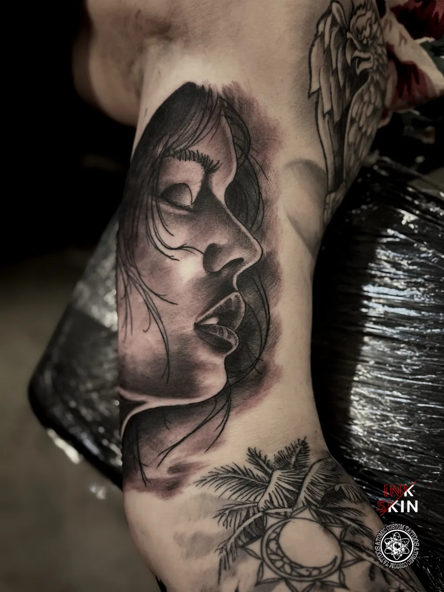
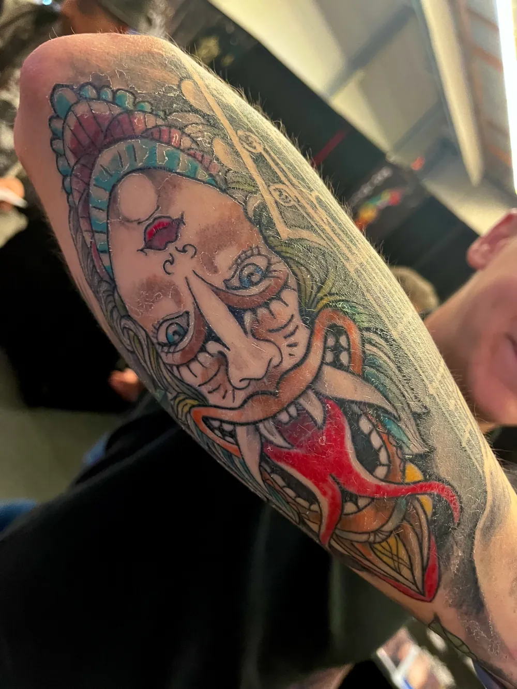
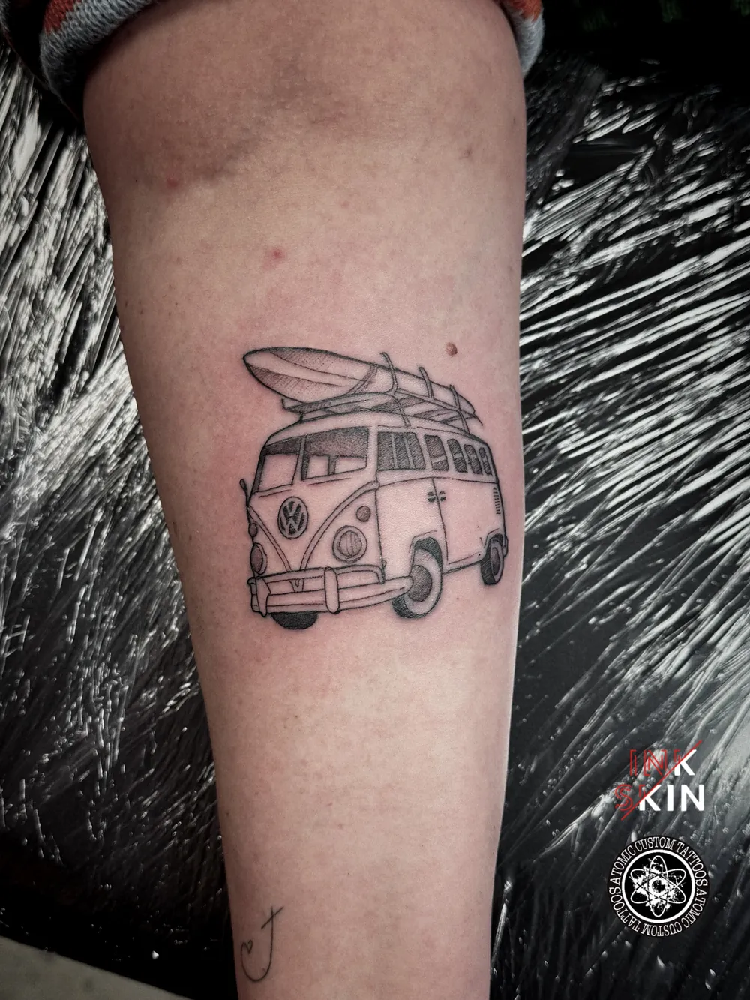
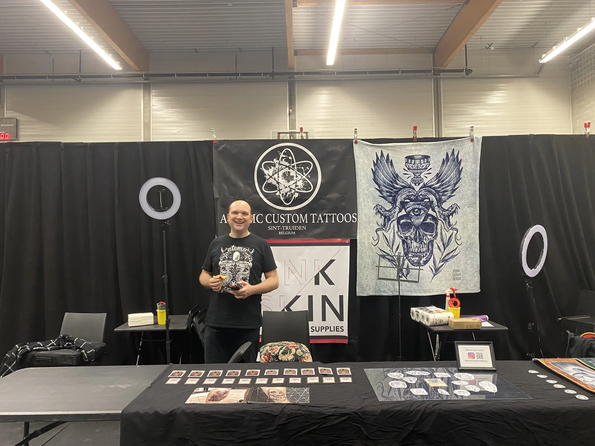
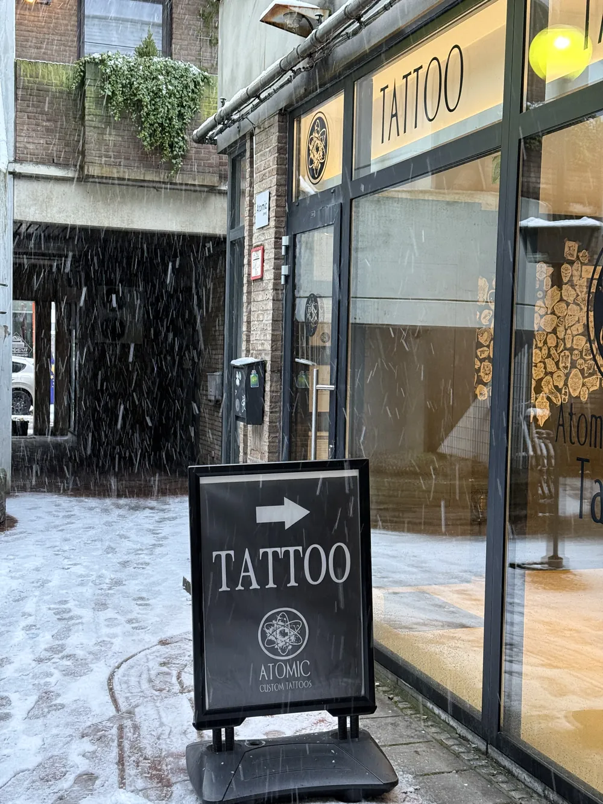

op Google
 met de hand getekend
met de hand getekendEén shop. Eén artiest.
Bij Atomic zet Tom elke tattoo zelf, en elk ontwerp tekent hij met de hand, speciaal voor jou. Niemand anders loopt rond met jouw tattoo!
uit de shopGeen stijl te veel.
Japans, illustratief, realistisch of klein en fijn. Tom zit niet vast aan één genre. Wat altijd terugkomt, is de aandacht voor detail.


Niet meer blij mee? Retoucheren en coveren is net een van Toms sterktes.
Kom eens langs

Uit 65 reviews op Google
Groot of klein, elke tattoo krijgt dezelfde aandacht.
100% handgetekendElk ontwerp is uniek, ook als je je eigen schets meebrengt.
Gratis bijkleurenTot 6 maanden na het zetten.
Steriel en wegwerpNieuwe naalden, tubes en tips, enkel voor jou.
Uit de grafische sectorOntwerpen die in balans zijn met je lichaam.

Kom binnen met je idee.
Spring binnen tijdens de openingsuren of stuur Tom eerst een berichtje. Een foto of schets mag je gerust meesturen. De prijs bespreek je in de shop.
